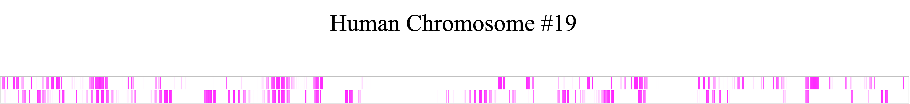
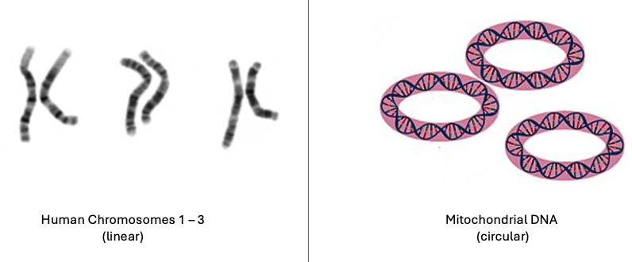
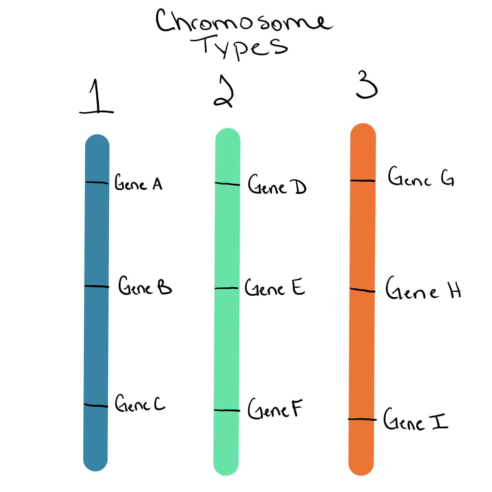
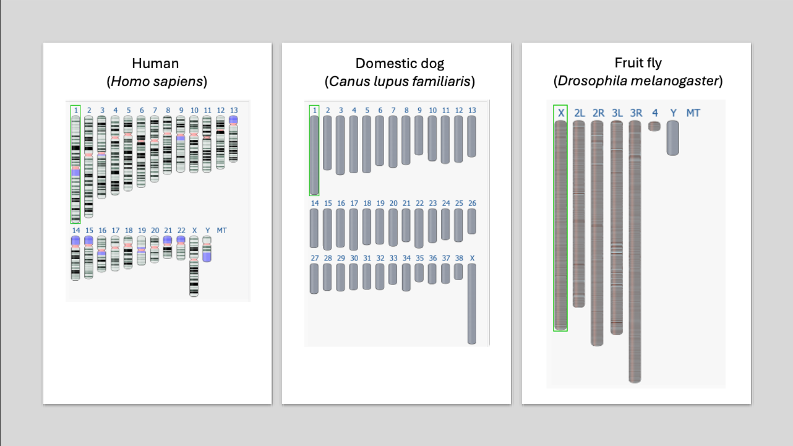
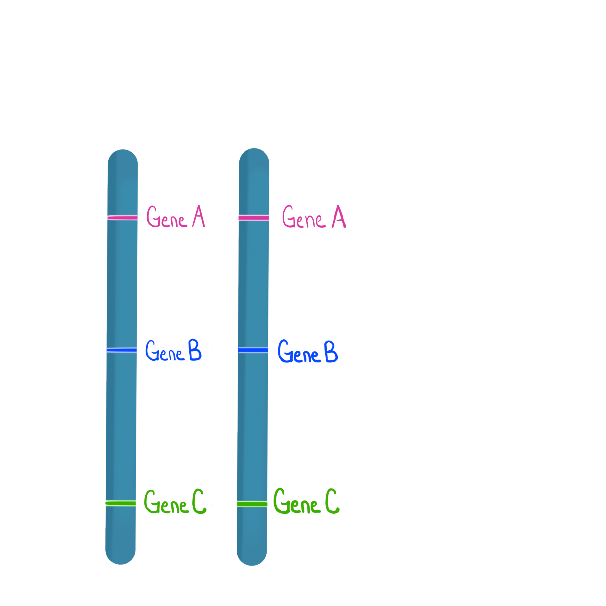
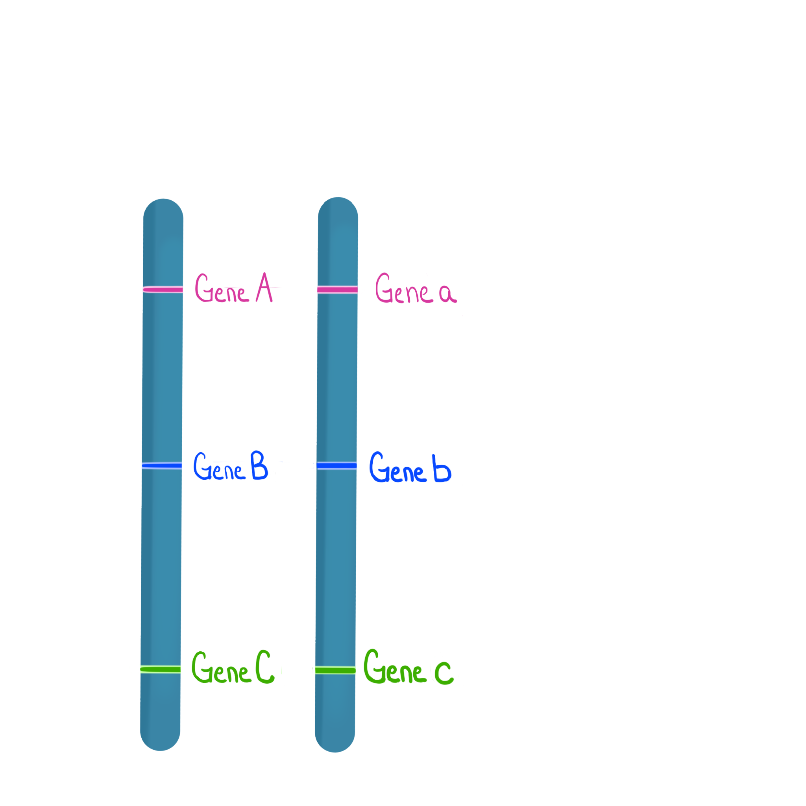

Chromosomes
Key Points
- what a chromosome is
- how chromosomes differ from each other
- what it means for chromosomes to be homologous
This section builds the mental model you’ll use all semester.
What is a chromosome?
A chromosome is:
- one single DNA molecule
- packaged with proteins
- containing many genes and many sections without genes (intergenic regions)
- defined by the genes it carries
A chromosome is not a single gene — it is a collection of many genes and intergenic regions arranged along one DNA molecule.

Figure 2. Human Chromosome 19 is 58,517,616 base pairs long and encodes ~1500 genes. The image depicts genes as pink lines and intergenic regions as white space.Chromosomes can be different shapes
- Some chromosomes are linear (like a piece of spagetti)
- Some chromosomes are circular (like a fruit loop)

Figure 1. Left: Chromosomes 1 - 3 of a human karyotype illustrating linear chromosomes. Right: A depiction of mitochondrial DNA illustrating circular chromosomes. Image source: National Human Genome Research Institute, Public domain, via Wikimedia Commons. Science Primer (National Center for Biotechnology Information). Vectorized by Mortadelo2005., Public domain, via Wikimedia Commons. Edited by author.
Different Chromosome types carry different genes
Each chromosome type carries a unique set of genes.
What to notice
None of the three chromosome types share genes.

Figure 2. Three chromosome types, each with a unique set of genes.Two chromosomes are only considered the “same type” if they carry the same genes in the same order.
Different species have different numbers of chromosome types
There is no universal chromosome number.
Examples:
- Humans: 23 chromosome types
- Dogs: 39 chromosome types
- Fruit flies: 4 chromosome types

Figure 4. Idoegrams of Human, Domestic dog, and Fruit fly chromosomes types. Source: National Center for Biotechnology Information Genome Data Viewer.More chromosomes does not mean “more complex.”
What are homologous chromosomes (homologs)?
In many organisms, chromosomes come in sets.
Homologous chromosomes (or homologs) are the same chromosome type meaning each chromosome in the set has the same gene content in the same order.

Figure 4. A homologous pair of chromosomes.Homologs have the same genes, but not necessarily the same alleles
This point is critical.
Homologous chromosomes:
- have the same genes
- have those genes in the same locations
- may carry different alleles
Allele - different version of a gene. For example, if a gene codes for flower color, all alleles of that gene code for flower color but one allele might code for purple flower color while another codes for white flower color.
In the image below the letter case (e.g. A vs a) represents the allele. These homologs carry different alleles for Gene A, B, and C.

Figure 5. Homologous chromosomes carry the same genes but may have different alleles.Homologs = same genes, possibly different alleles.
Homologs vs different chromosome types (do not mix these up)
| Comparison | Homologous chromosomes | Chromosome types |
|---|---|---|
| Gene content | Same genes | Different genes |
| Gene order | Same order | Different |
| Alleles | May differ | Not comparable |
How many chromosomes are there in a set?
This depends on the organism and the cell type.
Humans are diploid organisms. This means our cells have two (2) homologs in a set.
- Di = two
- ploid = number of chromosomes
The number of chromosomes in a complete set is called ploidy — that’s next.
Big picture summary
- A chromosome is a single DNA molecule containing many genes
- Different chromosome types carry different genes
- Homologous chromosomes are the same chromosome type carrying the same genes but may have different alleles
- Species can differ in:
- number of chromosome types
- number of homologs in a complete set (ploidy)